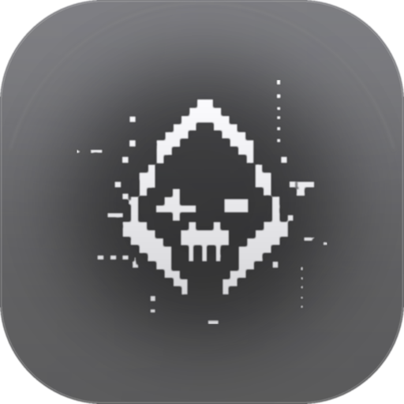

Слышит без интернета
Whisper распознаёт речь прямо на компьютере — ни одного запроса наружу.

FAZ1KПонимает с полуслова, открывает программы и сайты, управляет звуком и окнами, помнит, где что лежит.
FAZ1K — голосовой ассистент, который живёт на вашем компьютере, а не в чужом облаке. Скажите «открой дискорд», «громче», «сколько времени» — и он сделает.
Программы и сайты, звук и окна, скриншоты и запись экрана, поиск в интернете, напоминания, заметки — и память о ваших привычках.
Речь распознаётся на самом компьютере, поэтому быстро и без интернета. На видеокарте NVIDIA — в десять раз быстрее, чем на процессоре.
Интерфейс в двух темах: строгая чёрно-белая и цветная. Переключается на лету, выбор запоминается.
Ключ DeepSeek вводится один раз и шифруется под вашу учётную запись Windows. Второй раз программа его не спросит.
24 инструмента, один голос. Работает локально, отвечает через DeepSeek.
Whisper распознаёт речь прямо на компьютере — ни одного запроса наружу.
Программы, сайты, папки, конкретные браузеры. «Открой яндекс музыку в хроме».
Громкость, пауза, следующие треки, Spotify в браузере.
Запоминает команды, пути к файлам и то, как открывать программы.
Жидкое стекло с плавающими сгустками: монохром или цветная тема.
Заставка при запуске, иконка, окно-приложение вместо вкладки.
Короткий ролик о том, как это выглядит.
Одно приложение — два настроения. Нажми на карточку, чтобы примерить стиль на сайт.


Установщики ещё не опубликованы — идёт финальная сборка.
Мы собираем две версии: обычную — с Python и моделью распознавания внутри, и быструю — с ускорением на видеокарте NVIDIA. Обе будут ставиться в один клик.
Первый запуск занимает около пяти минут — почти всё это время программа скачивает модель распознавания речи. Дальше всё будет открываться за пару секунд.
FAZ1K.exe ещё раз.